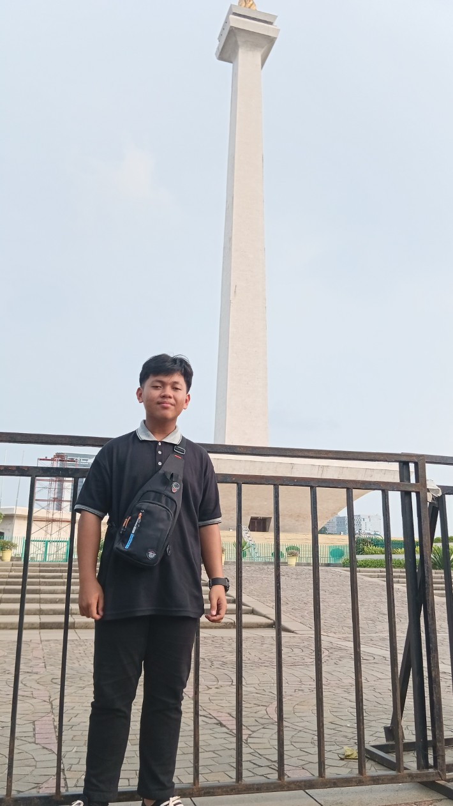

Tempat Foto 9:16
Peserta Tan Jakarta
Siap Diisi Foto

Peserta Tan Jakarta 2024
Berhasil terpilih menjadi perwakilan kabupaten untuk ikut serta dalam kegiatan Temu Anak Nasional atau biasanya disebut TAN Jakarta 2024 di Ibu Kota Jakarta. Pengalaman berharga ini memperluas cakrawala berpikir, mempererat tali persaudaraan antar generasi muda dari berbagai latar belakang, serta melatih kolaborasi dan diplomasi publik.
- Lokasi: DKI Jakarta
- Fokus: Kepemudaan, Wawasan Nasional, & Relasi Lintas Wilayah